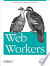
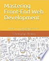
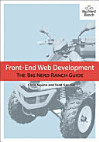

-
Web Workers: Multithreaded Programs in JavaScript by Ido Green

This book is about the significance of efficient Web applications. It outlines that Web apps- would run much better if heavy calculations could be performed in the background, rather than compete with the user interface. It discusses how to use Web Workers to run computationally intensive JavaScript code in a thread parallel to the UI. Yes, multi-threaded programing is complicated, but Web Workers provide a simple API that helps you be productive without the complex algorithms. Read more...
-
Mastering Front-End Web Development by Chong Lip Phang

This book discusses the importance of mastering key technical features required for front end web development. It emphasizes on the fact that skillful front-end web developer knows more than just the basics of HTML, CSS and JavaScript. Going beyond the major web-based languages, this book represents an attempt to compile all the knowledge needed to become a professional front-end web developer. It introduces more than 200 web extensions, frameworks, tools, and libraries, along with a complete illustration of all Web APIs known to the world today. Read more...
-
Front-end Web Development by Chris Aquino and Todd Gandee

In this book, Aquino and Gandee shed much light on the notion of software development shift from packaged software to Software-as-a-Service (SAAS) built with front-end web development tools. All over the world, companies are desperate to hire software professionals with these new skills; job placement services are scrambling to find candidates. Front-End Web Development: The Big Nerd Ranch Guide brings together all the crucial JavaScript, HTML5, and CSS3 skills that experienced developers need to succeed in modern front-end development. Writing for programmers coming from older platforms or different web paradigms, two Big Nerd Ranch boot camp trainers get you up-to-speed fast on tools and best practices you need right now. Read more...